CF-CLVR04Z
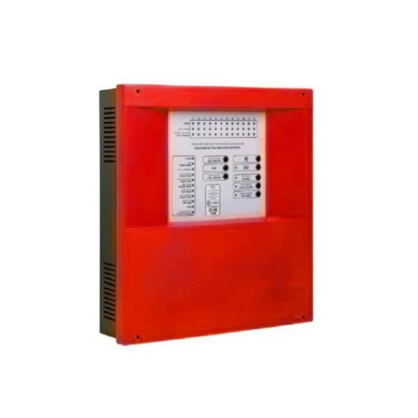
Características
Central automática convencional CLVR 4 ZONAS
CF-CLVR04Z
Central de 4 zonas (2hilos).
2 salidas de sirena supervisada retardable de 0 a 10
minutos, y protegida cada una por fusible autorearma-
ble.
1 relay de alarma inmediata a través de un contacto
seco NA/NC.
1 salida de avería inmediata a través de un contacto
seco NA/NC; 1 salida auxiliar de 30 Vdc Supervisadas
y protegidas por un fusible autorearmable para
alimentación externa
Normado CE, EN 54-2, EN 54-4.
CF-CLVR12Z
Características
Central automática convencional CLVR 12 ZONAS
CF-CLVR12Z
Central de 12 zonas (2 hilos).
2 salidas de sirena supervisada retardable de 0 a 10
minutos, y protegida cada una por fusible autorear-
mable.
1 relay de alarma inmediata a través de un contacto
seco NA/NC.
1 salida de avería inmediata a través de un contacto
seco NA/NC; 1 salida auxiliar de 30 Vdc Supervisadas
y protegidas por un fusible autorearmable para
alimentación externa
Normado CE, EN 54-2, EN 54-4
CF-A35BST
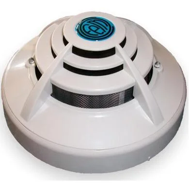
Características
Detector Fototérmico convencional
CF-A35BST
Sensor térmico activo al alcanzar los 64°C.
Doble LED de alarma
La cabeza y el zócalo (intercambiable con toda la gama
A35B) están realizados en ABS termorresistente.
Indicador de alarma Led rojo
Alimentación: 12-30V sin polaridad
Sensibilidad: EN 54-7
Normada: CE, EN 54-1
CF-A30XT
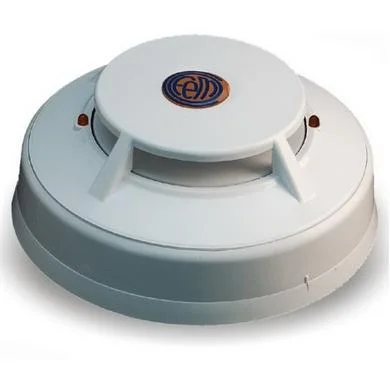
Características
Detector Térmico convencional
CF-A30XT
Altura total menor de 45mm (incluyendo el zócalo).
Sensor térmico activo al alcanzar los 55°C.
Doble LED de alarma
Posibilidad de conexión a un indicador de acción remoto
La cabeza y el zócalo (intercambiable con toda la gama
A30X) fabricados en ABS termorresistente blanco.
Indicador de alarma Led rojo
Alimentación: 12-30V sin polaridad
Normada: CE, EN 54-1
CF-A30XH
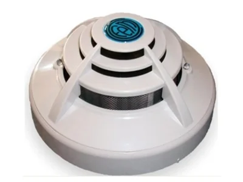
Características
Detector fototérmico convencional
CF-A30XH
Bajo perfil, altura total menor de 54 mm
Doble LED rojo de alarma
Posibilidad de conexión a un indicador de acción
remoto.
Fácil conexionado, sin polaridad.
Señalización de estado de suciedad por doble
parpadeo de los leds.
Cabeza y zócalo de fácil instalación, intercambiables
en toda la gama A30
Normada: CE, EN 54-1
CF-ZAFIRPWS5
 Características
Características
Fuente de alimentación externa
CF-ZAFIRPWS5
Salida 30V supervisada y protegida con cuatro bornes
para facilitar el conexionado.
Salida Avería libre de tensión, que se activa por
cualquier anomalía del sistema, permitiendo integrar-
se con otros sistemas
Capacidad de alimentación de 4A (150w)
Alimentación: 110/230V50-60Hz/AC
Dimensiones: 363x331x96mm
Normada: CE, EN 54-1
CF-PUCAR
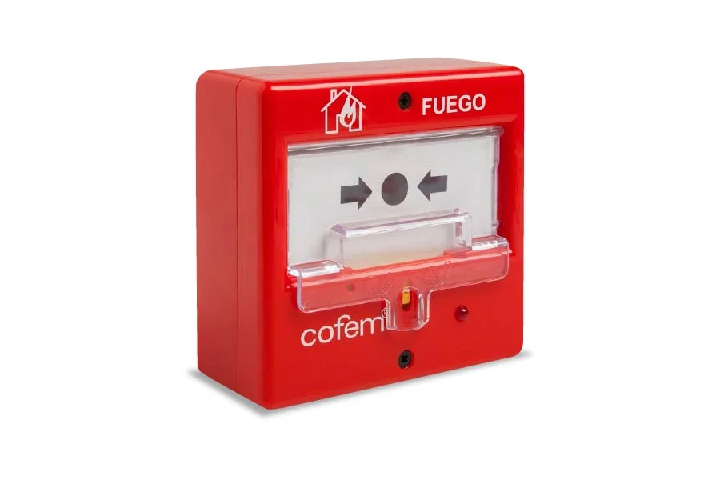
Características
Estación manual convencional
CF-PUCAR
Doble Acción, Rearmable.
Indicador de acción (led rojo)
Tapa protectora transparente de la cara de acciona-
miento para evitar pulsaciones accidentales
Reconocimiento visual inmediato del estado de
alarma por la activación permanente del led
Alimentación: 24-35V con polaridad
Led rojo Indicador de activación
Normada: CE, EN 54-11
CF-SIR24BL
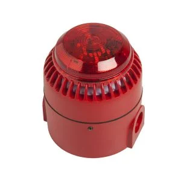
Características
Sirena de Alarma Bitonal con luz strobo
CF-SIR24BL
Sirena de interior y exterior fabricada en ABS rojo
Sincronización automática
32 tonos seleccionables. Control de volumen.
Gran volumen de sonido. Bajos consumo.
Consumo: 24 Vdc 16 mA
Dimensiones: 95 x 95 x 135 mm
Normada: CE, EN 54-1
CF-ZAFIR02B
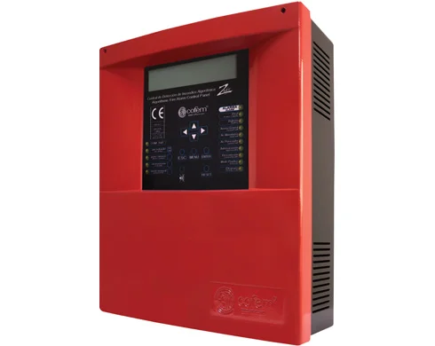
Características
Central direccionable de 2 Bucles (398 puntos)
CF-ZAFIR02B
Permite conectar 199 puntos por bucle.
Todos los puntos de los bucles son supervisados,
excepto el aislador de bucle KABY.
Capacidad de hasta 64 relés configurables.
Permite la programación de 99 zonas.
Salida de sirena retardada programable de 0 a 10
minutos supervisada, identificada como S1.
Display LCD retroiluminado de 4 líneas y 40 caracteres.
Dimensiones: 363 x 331 x 96 mm
Normada: CE, EN 54-1
CF-CLYON02B
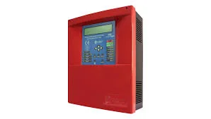
Características
Central direccionable de 2 Bucles (198 puntos)
CF-CLYON02B
Pantalla LCD 40 caracteres.
99 puntos por bucle.
Capacidad de hasta 64 relés.
Registro de 4095 eventos.
Display LCD retroiluminado de 4 líneas y 40 caracteres.
Dimensiones: 363 x 331 x 96 mm
CF-PUCAY
 Características
Características
Estación manual direccionable
CF-PUCAY
Doble Acción, Rearmable.
Indicador de acción (led rojo)
Tapa protectora transparente de la cara de acciona-
miento para evitar pulsaciones accidentales
Reconocimiento visual inmediato del estado de
alarma por la activación permanente del led
Alimentación: 24-35V con polaridad
Led rojo Indicador de activación
Normada: CE, EN 54-11
Normada: CE, EN 54-1
CF-SIRAYL
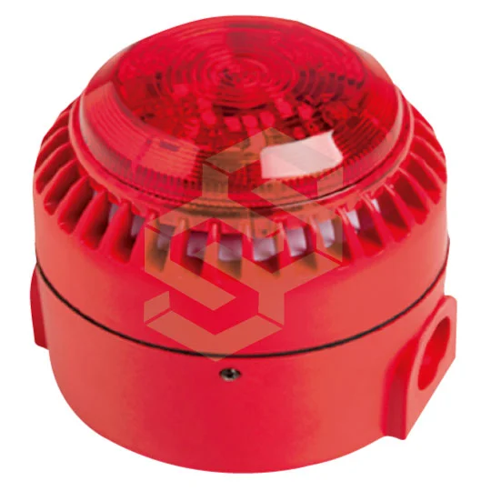
Características
Sirena digital microprocesada direccionable con luz strobo
CF-SIRAYL
Sirena fabricada en ABS termoresistente rojo
Aislador de circuito: si
Gran volumen de sonido. Bajos consumo.
Alimentación: 24-35V con polaridad
Consumo en Alarma: 5-50 mA
Dimensiones: 95 x 107 mm
Normada: CE, EN 54-23
CF-A30XHAS
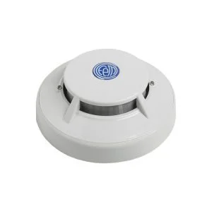
Características
Detector fotoeléctrico direccionable
CF-A30XHAS
Efecto Tyndall (refracción de la luz en una cámara
oscura), creado en una cámara óptica.
Bajo perfil, altura total menor de 53,4 mm
Doble LED rojo de alarmao (visibilidad de 360o)
Fácil conexionado, sin polaridad.
Indicación, mediante los leds, de la comunicación con
la central (parpadeo simple)
Alimentación: 24 - 35V sin polaridad
Normada: CE, EN 54-7
CF-KABY
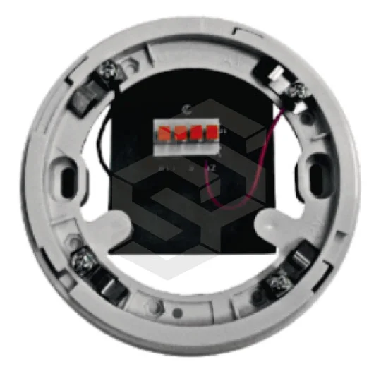
Características
Módulo aislador direccionable
CF-KABY
Módulo microprocesado que se instala como un
elemento más del bucle
Módulo de protección de Bucle.
Se suministra instalado en el interior de un zócalo alto
Instalación cada 32 dispositivos.
El módulo se alimenta por la conexión al bucle.
Alimentación: 24 - 35V con polaridad
Dimensiones: 140,5x73 x 48mm
Normado: CE, EN 54-17.
CF-A30XZR
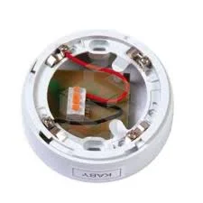
Características
Zócalo ALTO con Relé
CF-A30XZR
El A30XZR es una base alta de 4 hilos para conectar
detectores convencionales.
Fabricado en material ABS blanco Termo resistente.
CF-A30XZO
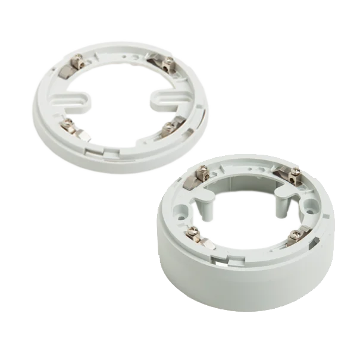
Características
Zócalo BAJO
CF-A30XZO
Existen 2 versiones: con zócalo bajo o con zócalo alto
(preparado para conexión con tubo de 20 mm de
diámetro)
CF-MSTAY
 Características
Características
Módulo de supervisión direccionado
CF-MSTAY
2 entradas de contacto seco supervisadas con una
resistencia de 10kΩ.
En estado de reposo el contacto debe estar abierto y
en caso de anomalía debe estar cerrado.
Supervisa: Sensores de flujo, puertas cortafuego.
Alimentación: 24 - 35V con polaridad
Dimensiones:140,5x73x48 mm
Normado: CE, EN54-18.
CF-KMAY
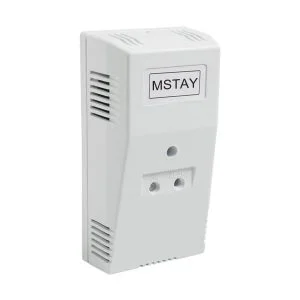
Características
Módulo monitor direccionado
CF-KMAY
Este módulo permite conectar detectores y/o
pulsadores convencionales en un sistema algorítmi-
co-direccionable.
ZONA C: máximo 10 pulsadores convencionales
ZONA D: máximo 20 detectores de temperatura ó 15
elementos e/. dtectores y pulsadores.
Incluye aislador de corto circuito
Alimentación: 24 - 35V con polaridad
Dimensiones: 140,5x73 x 48mm
Normado: CE, EN 54-18.
CF-MDA2Y
 Características
Características
Módulo de supervisión direccionado
CF-MDA2Y
Fabricados en ABS termorresistente
2 salidas de relés de accionamiento independiente
Aislador de cortocircuito: si
Tensión supervisión en relé: 7V con polaridad inversa
Indicador de activación: led verde
Indicador de comunicación: led rojo
Alimentación: 24 - 35V con polaridad
Dimensiones: 140,5x73 x 48mm
Normado: CE, EN 54-18.
CF-MDA1Y
 Características
Características
Módulo de 1 RELÉ direccionable
CF-MDA1Y
Fabricados en ABS termorresistente
1 Relay supervisado, 1 Relay NO supervisado.
Aislador de cortocircuito: si
Tensión supervisión en relé: 7V con polaridad inversa
Indicador de activación: led verde
Indicador de comunicación: led rojo
Alimentación: 24 - 35V con polaridad
Dimensiones: 140,5x73 x 48mm
Normado: CE, EN 54-18.